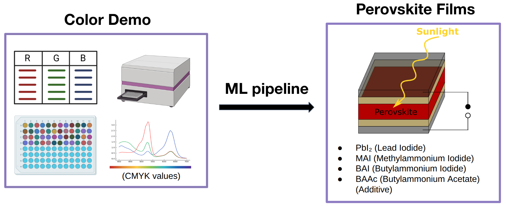
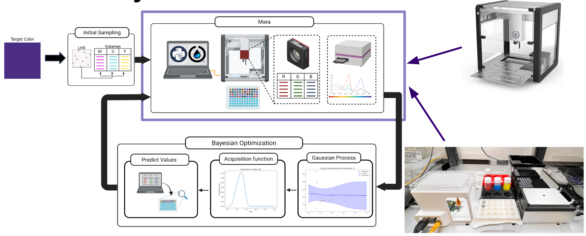

UW Sun Lab
Systems Engineering & Machine Learning Research Assistant


Overview
Self-driving lab work: Latin Hypercube Sampling (LHS) on Opentrons (96 samples), computer vision for the first iteration, and comparison across iterations and batch sizes. Pipeline toward full automation and color concentration (e.g. black) feedback.
Methods & workflow
- LHS on Opentrons — 96-sample design for efficient exploration
- CV for first iteration — Computer vision to assess and drive next steps
- Comparison — Iterations, batch sizes, and performance metrics
Next steps & considerations
- Automation: experiment with parameters for CV; import pyODE for LHS; Arducam integration; retrieve data from CV and reiterate
- Color concentration (e.g. black) as a control or feedback signal
- Stock threshold when running out of material; cross-contamination and noise handling